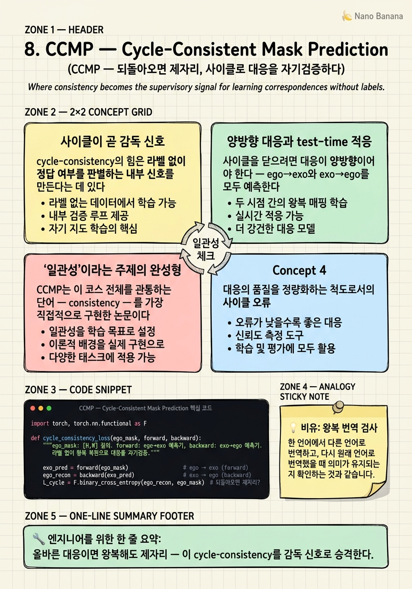

CCMP — Cycle-Consistent Mask Prediction
번역이 옳은지 확인하는 가장 확실한 방법 — 다시 원래 언어로 되돌려 처음과 같은지 보는 것. 시점 대응도 똑같이 검증할 수 있다.

🎯 학습 목표
- cycle-consistency가 왜 강력한 자기지도 신호인지 안다
- 양방향(ego↔exo) 대응을 사이클로 검증하는 구조를 이해한다
- 라벨 없는 자기지도와 test-time training의 연결을 설명한다
- 학습된 사이클과 엄격한 3D 기하 재투영의 차이를 구분한다
- 이 논문이 '일관성'이라는 코스 주제를 정면으로 구현함을 안다
7장 O-MaMa는 대응을 매칭으로 풀되 후보에 갇혔다. 무엇이 옳은 대응인지 검증할 내부 신호가 없다는 게 근본 문제다. 정답 라벨에 기대야 하고, 새 도메인에서 스스로 교정할 방법이 없다.
CCMP(CVPR 2026)는 이 코스의 이름 그대로 일관성(consistency)을 정면으로 무기화한다. 발상은 번역 검증의 고전이다 — 올바른 번역이라면 되돌려도 원문과 같아야 한다.
구체적으로, ego의 질의 마스크를 exo로 예측한 뒤(forward), 그 예측된 exo 마스크를 다시 ego로 되돌려 예측한다(backward). 되돌아온 마스크가 원래 질의 마스크와 같으면 그 대응은 자기일관적이다. 이 cycle-consistency를 손실로 걸면, 정답 라벨 없이도 대응을 학습·검증할 수 있고, 심지어 추론 시점에 스스로 적응(test-time training)할 수 있다.
O-MaMa가 '후보 중 고르기'였다면 CCMP는 '고른 대응이 사이클을 닫는가'로 자기검증한다. correspondence 계열이 외부 라벨 의존에서 내부 일관성 자기감독으로 진화하는 지점이다.
핵심 내용
사이클이 곧 감독 신호
cycle-consistency의 힘은 라벨 없이 정답 여부를 판별하는 내부 신호를 만든다는 데 있다.
ego 마스크 \(M_{ego}\)를 exo로 예측하는 함수를 \(F\)(forward), exo를 ego로 되돌리는 함수를 \(B\)(backward)라 하자. 올바른 대응이라면,
\[B(F(M_{ego})) \approx M_{ego}\]
되돌아온 마스크가 원래와 같아야 한다. 이 등식이 깨지면 대응이 틀렸다는 신호다. 정답 exo 마스크를 몰라도, 되돌아오는지만 보면 대응 품질을 잴 수 있다.
\[\mathcal{L}_{cycle} = \big\| B(F(M_{ego})) - M_{ego} \big\|\]
이것이 자기지도(self-supervision)의 정수다 — 데이터 자체의 구조(왕복 일관성)에서 감독 신호를 짜낸다. 7장까지 정답 마스크 라벨에 기대던 대응 학습이, 여기서 라벨 없는 일관성으로 독립한다.

양방향 대응과 test-time 적응
사이클을 닫으려면 대응이 양방향이어야 한다 — ego→exo와 exo→ego를 모두 예측한다. 두 방향을 함께 학습하니 대응이 대칭적이고 견고해진다. 한 방향만 학습하는 것보다 정보가 풍부하다.
더 흥미로운 것은 test-time training이다. cycle-consistency 손실은 정답 라벨이 필요 없으므로, 추론하는 바로 그 영상에서 계산할 수 있다. 즉 학습 때 못 본 새 장면·새 도메인을 만나도, 그 영상에서 사이클 손실을 최소화하며 모델을 즉석 미세조정할 수 있다.
이것이 실전에서 결정적이다. ego-exo는 환경·객체·조명이 무한히 다양해 학습 분포를 벗어나기 일쑤다. 대부분의 대응 모델은 새 도메인에서 성능이 떨어지지만, CCMP는 그 도메인의 영상 자체로 스스로 교정한다. 라벨 없는 자기검증이 곧 적응 능력으로 이어진다 — 자기지도의 두 얼굴이다.
주의할 점은 이 '되돌리기'가 학습된 조건부 분할의 사이클이지, 엄격한 3D 기하 재투영은 아니라는 것이다. 카메라 기하로 픽셀을 정확히 역투영하는 게 아니라, 신경망이 배운 대응 함수를 왕복시킨다. 그래서 기하적으로 완벽하진 않지만, 라벨·기하 정보 없이 작동한다는 실용적 장점이 크다.

'일관성'이라는 주제의 완성형
CCMP는 이 코스 전체를 관통하는 단어 — consistency — 를 가장 직접적으로 구현한 논문이다. 1~5장의 정렬도 넓게는 일관성이지만, 그것은 '표현이 시점 간에 일관되게'였다. CCMP는 대응 자체에 왕복 일관성이라는 수학적 제약을 걸어, 일관성을 감독 신호로 승격시킨다.
correspondence 계열의 진화를 정리하면 이렇다.
| 논문 | 대응을 푸는 법 | 감독 |
|---|---|---|
| ObjectRelator | 객체 정렬 + 위치 | 자기지도 정렬 + 라벨 |
| O-MaMa | 마스크 후보 매칭 | 대조 + 정답 라벨 |
| CCMP | 양방향 예측 + 사이클 | 왕복 일관성(라벨 불필요) |
외부 라벨 의존에서 내부 일관성 자기감독으로 내려온 궤적이 뚜렷하다. 여기까지가 correspondence의 흐름이다.
하지만 대응은 여전히 "저 객체가 여기 어디"까지다. 대응은 매핑이지 재구성이 아니다. 로봇이 3인칭 시연을 보고 자기 1인칭 영상 자체를 상상하거나, 없는 시점을 만들어내는 것 — 그건 대응을 넘어선 생성의 영역이다. 9장에서 무대는 마지막으로 한 번 더 바뀐다. 정렬도 대응도 아닌, 한 시점에서 다른 시점을 통째로 그려내는 생성으로.
💡 비유로 이해하기
번역의 정확성을 확인하는 가장 확실한 손쉬운 방법이 있다. 한국어를 영어로 번역한 뒤, 그 영어를 다시 한국어로 번역해 처음과 같은지 보는 것이다. "고양이가 담을 넘었다 → The cat jumped over the wall → 고양이가 담을 뛰어넘었다"면 대체로 옳다. 되돌린 결과가 원문과 크게 다르면 번역이 어딘가 틀렸다.
CCMP의 cycle-consistency가 정확히 이것이다. ego의 컵 마스크를 exo로 예측하고, 그 exo 마스크를 다시 ego로 되돌린다. 되돌아온 컵이 원래 컵과 겹치면 대응이 자기일관적이다. 놀라운 점은 정답(참조 번역)이 없어도 이 검사가 된다는 것 — 되돌아오는지만 보면 되니까.
덕분에 처음 보는 문장(새 도메인 영상)을 만나도, 그 자리에서 왕복 검사를 하며 번역기를 스스로 다듬을 수 있다(test-time training). 단, 이 검사는 '의미가 왕복하는가'이지 '문법적으로 완벽한가'는 아니다 — 학습된 대응의 왕복일 뿐 엄밀한 기하 재투영은 아니라는 뜻이다.
💻 코드 예시
CCMP의 심장 — forward/backward 예측을 왕복시켜 원래 마스크 복원을 강제하는 cycle 손실 — 을 보자.
import torch, torch.nn.functional as F
def cycle_consistency_loss(ego_mask, forward, backward):
"""ego_mask: [H,W] 질의. forward: ego→exo 예측기, backward: exo→ego 예측기.
라벨 없이 왕복 복원으로 대응을 자기검증."""
exo_pred = forward(ego_mask) # ego → exo (forward)
ego_recon = backward(exo_pred) # exo → ego (backward)
L_cycle = F.binary_cross_entropy(ego_recon, ego_mask) # 되돌아오면 제자리?
return L_cycle, exo_pred
# test-time: 정답 라벨 없이 '지금 이 영상'에서 사이클 손실로 즉석 적응
def test_time_adapt(ego_mask, forward, backward, opt, steps=5):
for _ in range(steps):
opt.zero_grad()
L, _ = cycle_consistency_loss(ego_mask, forward, backward)
L.backward(); opt.step() # 라벨 없이 새 도메인에 적응
return forward(ego_mask)cycle_consistency_loss가 핵심 — forward로 ego→exo 마스크를 예측하고 backward로 다시 ego로 되돌려, 원래 ego_mask와의 복원 오차를 손실로 건다. 정답 exo 마스크가 어디에도 필요 없다 — 왕복 일관성만으로 대응을 감독한다. test_time_adapt은 이 무라벨 손실을 추론 대상 영상에서 직접 최소화해, 학습 분포 밖 새 도메인에 즉석 적응한다. O-MaMa가 후보에 갇혔던 것과 달리, 사이클이 대응에 내부 나침반을 준다. 단 이 왕복은 학습된 함수의 사이클이지 3D 기하 재투영은 아니다.
🏭 현업에서의 평가
✅ 시니어가 보는 것
- 왕복 일관성이 라벨 없이 정답성을 판별하는 원리를 설명하는가
- 양방향 대응과 test-time 적응의 연결을 이해하는가
- 학습된 사이클과 엄밀 3D 재투영의 차이를 구분하는가
⚠️ 레드 플래그
- cycle-consistency를 3D 기하 재투영과 동일시
- test-time training이 라벨을 필요로 한다고 오해
- 일관성 손실만으로 자명해(trivial solution)에 빠질 위험을 간과
🎤 예상 인터뷰 질문 (클릭하면 모범답안)
정답 마스크 라벨 없이 어떻게 대응을 학습·검증하는가?
cycle-consistency로. ego 마스크를 exo로 예측(forward)하고 그 exo를 다시 ego로 되돌려(backward) 원래 마스크와 같은지 본다. 되돌아오면 자기일관적, 아니면 틀린 신호. 데이터 구조(왕복 일관성)에서 감독을 짜내므로 정답 exo 라벨이 필요 없다.
cycle-consistency가 test-time training으로 이어지는 이유는?
손실이 라벨을 안 쓰니 추론 대상 영상 자체에서 계산·최소화할 수 있다. ego-exo는 도메인이 무한 다양해 학습 분포를 자주 벗어나는데, CCMP는 새 영상에서 사이클 손실로 즉석 미세조정해 스스로 교정한다. 무라벨 자기검증이 곧 적응 능력이 된다.
이 '되돌리기'와 3D 기하 재투영의 차이는? 왜 중요한가?
CCMP의 왕복은 학습된 조건부 분할 함수의 사이클이지, 카메라 기하로 픽셀을 역투영하는 엄밀 재투영이 아니다. 그래서 기하적으로 완벽하진 않지만 카메라 파라미터·깊이 같은 기하 정보 없이 작동한다 — ego-exo는 그런 정보가 대개 없으므로 실용적 이점이 크다. 대신 trivial solution 방지 설계가 필요하다.
✨ 핵심 요약
일관성=감독
올바른 대응이면 왕복해도 제자리 — 이 cycle-consistency를 감독 신호로 승격한다.
무라벨 자기지도
정답 exo 마스크 없이, 되돌아오는지만으로 대응 품질을 잰다.
양방향 대응
ego→exo와 exo→ego를 함께 예측해 사이클을 닫고 대칭적·견고하게 만든다.
test-time training
라벨 불필요라 추론 영상 자체에서 즉석 적응 — 새 도메인을 스스로 교정한다.
학습된 사이클
엄밀 3D 재투영이 아닌 학습된 대응의 왕복 — 기하 정보 없이 작동하는 실용성.
라벨 의존 탈피
ObjectRelator·O-MaMa의 라벨 의존에서 내부 일관성 자기감독으로 내려온 궤적의 끝.
대응≠재구성
대응은 '어디인가'까지 — 없는 시점을 그려내는 생성은 9장의 영역이다.
- Yan et al. (2026). Learning Cross-View Object Correspondence via Cycle-Consistent Mask Prediction (CCMP). CVPR 2026. arXiv:2602.18996